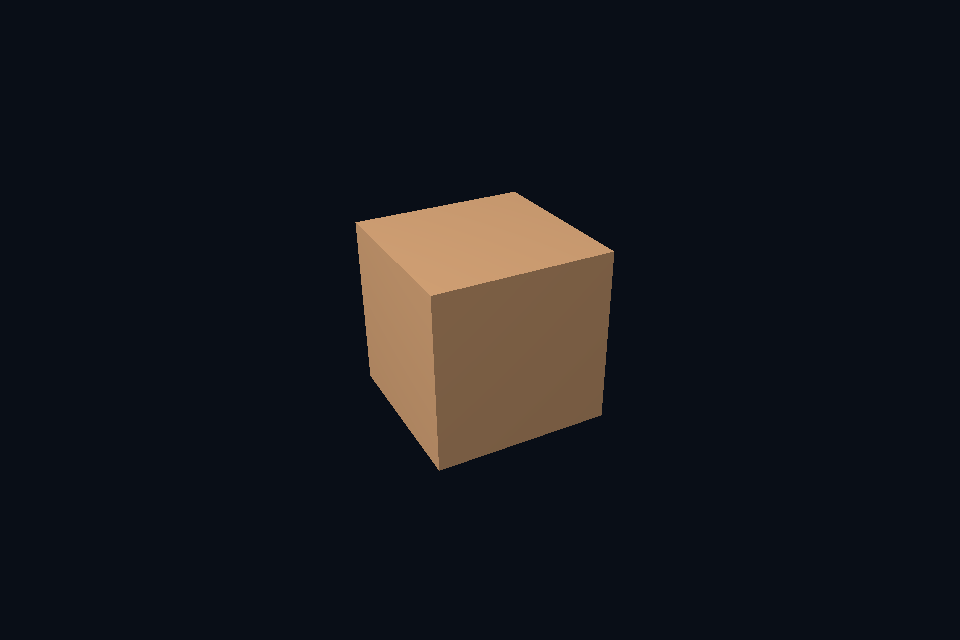

第 11 课 · 图像与 View：限定子资源访问 · DirectX 12
54 课目录 · 对照精讲 · 上一课 · 下一课
本课目标与先修
学习目标：解释“图像与 View：限定子资源访问”解决的问题，找到实际对象和参数，运行对应实验并用数据/画面证明。先完成前一课，并能说明它交付的对象与完成条件；本课在该依赖上增加新契约。
为什么需要这一层
资源是存储，view 是解释和访问范围。mip、array layer、aspect 与格式必须与资源创建约束一致。创建一个新的 view 不会产生一份新像素，也不会自动初始化它所指向的内容。
DirectX 12 的对象、参数与执行推导
SRV 写入 descriptor heap，描述 MostDetailedMip、MipLevels 与格式。相同 resource 可有不同合法 view；本课程通过限定末级 mip 验证这个区别。RTV/DSV 则服务输出用途，不直接等同于 shader-visible SRV。
对照 Vulkan 原生：相同问题的另一种分工
普通交换链 view 指向一张图像的颜色面。扩展实验把可采样纹理的 view 限定到最后一级 mip，观察整体成为近似平均颜色；view 的 baseMipLevel 与 sampler LOD 是相关但不同的范围。
关键参数与可检查不变量
先为每项指出源码中的创建/绑定位置，以及证明它成立的实际日志、字节或图像。数值中的设备限制以查询为准；固定实验尺寸不当作所有设备的上限。
nvpro_core2 框架对照
RenderTarget 产生图像和 view，ImTexture 引用供 UI 显示的 view。重建 target 后需要更新引用；旧 view 不会自动指向新分配。
这部分是原生 Vulkan 各课的框架对照，框架可运行入口仍为原有六课。如果本节需要新接入工作，会按正文说明；不把原生实验当作已完成的框架实现。
运行与实际检查
从合集根目录执行；普通图形程序 Esc 退出，设备/计算/诊断程序输出结果后结束。从“开始学习.cmd”进入本页时，表格可直接点击运行。
cmake --preset dx12
cmake --build --preset dx12-debug --target dx41_subresource_view --parallel 4
.\DirectX12\build\bin\Debug\dx41_subresource_view.exe
ctest --preset dx12-debug -R "^dx41_subresource_view$" --output-on-failure
检查三个层次：创建/绑定/提交的接口约束；数据读回或目标画面；资源使用结束后的回收。诊断实验用合法信息或查询证明渠道可用，不故意保留 API 错误。图形 smoke 的像素检查与数值实验的逐项检查不同，具体实现见源码。
关键实现：从当前源码定位
来自 DirectX12/common/advanced_labs.cpp，第 391—434 行。下列是当前仓库的局部切片，可能在函数中间结束；完整上下文请打开文件，切片不作为单独可编译程序。
void attach(DxScene& scene, bool lastMip = false) {
D3D12_SHADER_RESOURCE_VIEW_DESC srv{};
srv.Format = viewFormat;
srv.ViewDimension = D3D12_SRV_DIMENSION_TEXTURE2D;
srv.Shader4ComponentMapping = D3D12_DEFAULT_SHADER_4_COMPONENT_MAPPING;
srv.Texture2D.MostDetailedMip = lastMip ? UINT(reference.size() - 1) : 0;
srv.Texture2D.MipLevels = lastMip ? 1 : UINT(reference.size());
c.device->CreateShaderResourceView(
texture.Get(), &srv, scene.srvHeap->GetCPUDescriptorHandleForHeapStart());
}
void verify() {
auto desc = texture->GetDesc();
UINT levels = UINT(reference.size());
std::vector<D3D12_PLACED_SUBRESOURCE_FOOTPRINT> footprints(levels);
UINT64 total{};
c.device->GetCopyableFootprints(
&desc, 0, levels, 0, footprints.data(), nullptr, nullptr, &total);
auto readback = c.buffer(total, D3D12_HEAP_TYPE_READBACK, D3D12_RESOURCE_STATE_COPY_DEST);
c.begin();
auto b = transition(texture.Get(),
D3D12_RESOURCE_STATE_PIXEL_SHADER_RESOURCE,
D3D12_RESOURCE_STATE_COPY_SOURCE);
c.cmd->ResourceBarrier(1, &b);
for (UINT level = 0; level < levels; ++level) {
D3D12_TEXTURE_COPY_LOCATION src{}, dst{};
src.pResource = texture.Get();
src.Type = D3D12_TEXTURE_COPY_TYPE_SUBRESOURCE_INDEX;
src.SubresourceIndex = level;
dst.pResource = readback.Get();
dst.Type = D3D12_TEXTURE_COPY_TYPE_PLACED_FOOTPRINT;
dst.PlacedFootprint = footprints[level];
c.cmd->CopyTextureRegion(&dst, 0, 0, 0, &src, nullptr);
}
b = transition(texture.Get(),
D3D12_RESOURCE_STATE_COPY_SOURCE,
D3D12_RESOURCE_STATE_PIXEL_SHADER_RESOURCE);
c.cmd->ResourceBarrier(1, &b);
c.submit();
void* p{};
D3D12_RANGE range{0, SIZE_T(total)};
dxCheck(readback->Map(0, &range, &p));
for (UINT level = 0; level < levels; ++level)
for (UINT y = 0; y < reference[level].height; ++y) {
auto* row = static_cast<uint8_t*>(p) + footprints[level].Offset +
阅读时按“前置对象 → 参数/布局 → 录制/调用 → 完成/可见性 → 释放”五步标注。共享 helper 减少重复代码，但不会取消每课的 API 契约。
受控修改实验
只把 view 的 mip 范围缩到最后一级，为什么资源的总分配大小没有随之缩小？
先记录预测，再只改一个因素；保留基线与修改后的输出。不要同时改变 shader、资源范围和同步，这样即使结果变好也无法归因。
参考推导与通过标准
view 不拥有存储。原始纹理仍有完整 mip 链，只是当前接口暴露其中一段。
常见失败与排查顺序
把 sampler 的 LOD 当作资源绝对 mip 号，会在 view 已偏移 base mip 时再次偏移；先明确相对范围。
先看第一条错误和当前执行路径，再看实际数据/绑定，最后看 shader 与画面。需要 GPU 证据时抓取正常交互帧；仅四帧的 smoke 适合自动检查，不适合手动抓帧。
自测与本课交付
能否不看源码回答：只把 view 的 mip 范围缩到最后一级，为什么资源的总分配大小没有随之缩小？
提交一份简短记录：输入与假设、唯一修改、预期、实际证据、原因、是否恢复基线。如果只能复述函数名而说不清何时允许访问/释放，先回到本课的数据流。
官方阅读位置与当前工程差异
指定 Vulkan 教程对应位置。DX12 路线按同一概念顺序建立映射，其对象与约束以 Microsoft 文档和本后端代码为准。49—54 课包含在基础/compute 之后加入的工程扩展。
版本与资料说明 · 调试 · 功能完成度
固定输入的实际 GPU 读回
